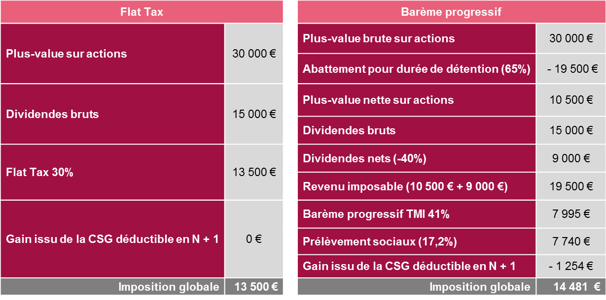
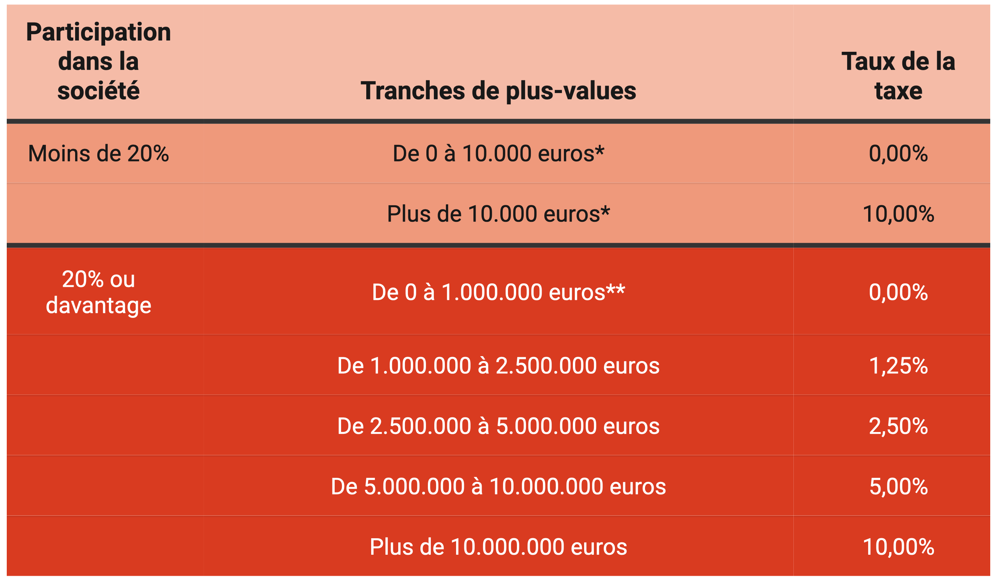

Imaginez que vous cultivez des légumes de compétition. Vous avez choisi les meilleures graines (votre analyse d'actions) et le meilleur engrais. Mais si vous plantez ces graines dans un sol toxique ou irradié, votre récolte sera misérable, quels que soient vos efforts. En bourse, l'enveloppe fiscale est le sol dans lequel vous allez planter votre capital. Faire le mauvais choix, c'est laisser l'État ou votre banquier siphonner silencieusement jusqu'à un tiers de la richesse que vous avez mis des décennies à construire.
La plupart des investisseurs font une erreur classique et dramatique : ils choisissent leur compte d'investissement en premier pour "éviter l'impôt à tout prix", puis ils tentent de forcer leur stratégie pour qu'elle rentre dans les limites de ce compte. C'est prendre le problème à l'envers. Votre stratégie doit dicter votre enveloppe, et non l'inverse.
Puisque notre audience est principalement franco-belge, nous allons décortiquer les écosystèmes fiscaux de la France et de la Belgique pour que vous sachiez exactement où loger vos futures actions, avec une précision chirurgicale.
🇫🇷 Investir en France : Le grand duel PEA vs CTO
La France est célèbre pour sa créativité fiscale. L'investisseur français fait face à un véritable menu à la carte, où chaque enveloppe possède des avantages séduisants mais des règles d'une rigidité implacable. Au centre de l'arène, deux poids lourds s'affrontent : le PEA et le CTO.
Comme le montre de manière limpide ce tableau comparatif, ces deux enveloppes ne jouent pas du tout dans la même catégorie. Analysons cela en détail :
1. Le PEA (Plan d'Épargne en Actions) : Le Saint Graal fiscal européen
C'est l'enveloppe reine pour l'investisseur résidant en France. L'objectif de l'État avec le PEA est clair : encourager les Français à financer l'économie européenne. En échange de cet "effort" patriotique, l'État vous offre un cadeau fiscal immense : après 5 ans de détention du plan, l'impôt sur le revenu (12,8%) disparaît totalement. Si vous retirez vos gains après ce cap fatidique des 5 ans, vous ne paierez "que" les prélèvements sociaux (actuellement à 17,2%). Mieux encore : tant que l'argent reste à l'intérieur du PEA, vous pouvez acheter, vendre, encaisser des dividendes et réinvestir sans payer le moindre centime d'impôt. C'est l'outil parfait pour faire rouler vos intérêts composés en vase clos.
Le revers de la médaille ? Ses contraintes strictes. Le PEA classique est plafonné à 150 000 € de versements (attention, on parle bien des sommes que vous y déposez de votre poche, les plus-values peuvent, elles, dépasser ce montant sans limite). Plus restrictif encore : le périmètre géographique. Vous ne pouvez y loger que des actions d'entreprises ayant leur siège social dans l'Union Européenne (plus la Norvège, l'Islande et le Liechtenstein). Si vous rêvez d'acheter des actions Microsoft, Apple, ou Visa en direct, le PEA vous fermera la porte au nez. Enfin, tout retrait effectué avant le 5ème anniversaire du plan entraîne (sauf rares exceptions) la clôture définitive de celui-ci et la perte de l'avantage fiscal.
Les trois visages du PEA 🧐
- Le PEA Classique : Plafond de 150 000 € de versements. C'est la base incontournable de tout investisseur français.
- Le PEA-PME : Plafond de 225 000 €. Attention, il est réservé aux titres de petites et moyennes entreprises (ETI). Notez que le cumul des versements de votre PEA classique + votre PEA-PME ne pourra jamais dépasser 225 000 € au total.
- Le PEA Jeune : Conçu pour les 18-25 ans rattachés au foyer fiscal de leurs parents. Le plafond est ici limité à 20 000 €.
2. Le CTO (Compte-Titres Ordinaire) : La liberté sans frontières
Le CTO est le terrain de jeu mondial. Vous l'ouvrez chez le courtier de votre choix, vous y mettez le montant que vous souhaitez (aucun plafond), et surtout, vous achetez ce que vous voulez, où vous voulez. Actions américaines, canadiennes, suisses (Nestlé, Roche), asiatiques, obligations... Le CTO ne connaît aucune frontière.
La contrepartie ? Le fisc ne vous fera aucun cadeau. En France, les gains générés sur un CTO sont soumis, par défaut, au PFU (Prélèvement Forfaitaire Unique), plus connu sous le nom de Flat Tax à 30%. Cette taxe se décompose en 12,8% d'impôt sur le revenu et 17,2% de prélèvements sociaux. Chaque fois qu'un dividende tombe sur votre compte ou que vous vendez une action avec une plus-value, l'État prend sa part de 30%.

Comme l'illustre cette simulation très parlante, bien que la Flat Tax (à gauche) soit le choix par défaut, le CTO vous laisse l'option de choisir l'imposition au Barème Progressif de l'impôt sur le revenu (à droite). Sur l'exemple de droite, pour un gain total équivalent (30 000€ de plus-value + 15 000€ de dividendes), le contribuable utilise un abattement pour durée de détention (65% s'il détient ses titres depuis plus de 8 ans). Cependant, comme son TMI (Taux Marginal d'Imposition) est très élevé (41%), la facture finale au barème progressif (14 481€) s'avère plus douloureuse que la simple Flat Tax (13 500€). Morale de l'histoire : la Flat Tax est généralement plus protectrice dès lors que vos revenus sont confortables, mais le CTO exige de faire ses calculs !
3. Et l'Assurance-Vie (AV) dans tout ça ?
L'assurance-vie française est un outil patrimonial exceptionnel (notamment pour transmettre un capital hors succession). Mais pour une stratégie pure de gestion de portefeuille boursier (Stock Picking), c'est une enveloppe souvent toxique à cause de ses frais structurels. Vous n'êtes pas "propriétaire" des actions en direct, et l'assureur prélèvera des frais de gestion annuels (souvent entre 0,60% et 1%) sur la totalité de votre capital. Sur 20 ou 30 ans, ces frais récurrents détruisent littéralement la magie des intérêts composés.
🇧🇪 Investir en Belgique : La fin d'un âge d'or absolu (Update 2026)
Pendant des décennies, la Belgique a été considérée comme un paradis quasi-absolu pour l'investisseur particulier grâce à une règle sacrée : l'absence d'impôt sur les plus-values boursières. En Belgique, pas besoin de PEA ou de mécanismes complexes. Le simple Compte-Titres Ordinaire (CTO) offrait une liberté totale et une fiscalité à 0% à la revente, à condition d'agir "en bon père de famille".
Cependant, depuis le début de cette année 2026, le gouvernement belge a instauré une réforme fiscale majeure qui vient bouleverser la donne. L'investisseur belge doit désormais composer avec une nouvelle Taxe sur les Plus-Values, dont les barèmes sont stricts.

Regardons ce tableau de près, car il redéfinit les règles du jeu pour l'investisseur belge. Le législateur a divisé les contribuables en deux catégories :
1. Le petit porteur (Participation dans la société < 20%) :
C'est votre cas si vous achetez des actions en bourse comme Microsoft, LVMH ou Amazon. Vous possédez évidemment moins de 20% de l'entreprise. Pour vous, l'État a prévu une franchise : les premiers 10 000 euros de plus-values annuelles restent taxés à 0%. Cependant, dès que vous franchirez ce plafond fatidique (en cas de revente d'une ligne très performante par exemple), toute plus-value supérieure à 10 000 euros sera frappée d'une taxe sèche de 10%. Ce n'est certes pas les 30% français, mais la notion de "paradis fiscal" a pris un sérieux coup dans l'aile. Il faudra désormais étaler stratégiquement vos reventes sur plusieurs années fiscales pour rester sous le seuil des 10 000 € exonérés. Attention que vous n'êtes pas taxé tant que vous ne revendez pas ! On ne parle pas ici de la plus-value latente.
2. Le gros actionnaire / Fondateur (Participation >= 20%) :
Si vous détenez une part massive d'une entreprise (souvent votre propre PME), les règles sont différentes et progressives. L'exonération (0%) est valable jusqu'à 1 million d'euros de plus-value. Ensuite, le taux grimpe progressivement (1,25% jusqu'à 2.5M€, 2,50% jusqu'à 5M€, etc.) pour atteindre un maximum de 10% au-delà de 10 millions d'euros.
Les autres "frictions" belges toujours d'actualité :
En plus de cette nouvelle taxe sur la plus-value, le CTO belge subit toujours :
- La TOB (Taxe sur les Opérations de Bourse) : Prélevée à chaque achat et vente (entre 0,12% et 1,32%). Elle punit les traders mais reste inoffensive pour les investisseurs long terme.
- Le Précompte Mobilier (Dividendes) : 30% de retenue à la source sur les dividendes. (Rappel : l'État permet de récupérer l'impôt payé sur une première tranche de dividendes - environ 833€ - via sa déclaration annuelle).
La citation à retenir 💬
"Le miracle des rendements composés est trop souvent anéanti par la tyrannie des coûts composés et de la voracité fiscale. L'investisseur intelligent protège ses arrières avant même de chercher la performance."
— John C. Bogle (Fondateur de Vanguard)
🔑 Ce qu'il faut retenir
Votre stratégie dicte l'enveloppe, pas l'inverse. En France, la combinaison gagnante est d'utiliser le PEA comme forteresse (17,2% d'imposition après 5 ans) pour les actions européennes, et un CTO (taxé à 30%) pour capturer la croissance mondiale (USA, Asie). Fuyez l'Assurance-Vie pour le stock-picking à cause de ses frais récurrents.
En Belgique, le Compte-Titres (CTO) reste l'outil central. Mais attention à la nouvelle donne de 2026 : si les 10 000 premiers euros de plus-value par an restent exonérés, tout profit supérieur sera désormais taxé à 10%. Le timing de vos reventes devient un enjeu d'optimisation fiscale majeur !